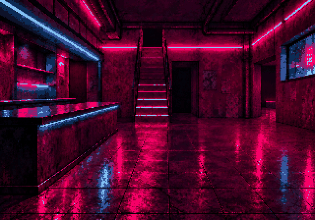
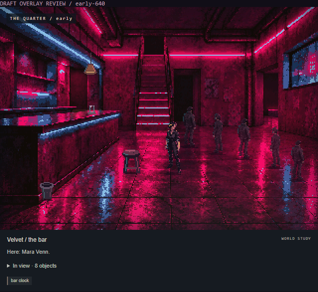

FREAK//CITY · ART REVIEW 01
Velvet has a room.
Now review its inhabitants.
PLATE APPROVED OVERLAYS DRAFT · HUMAN REVIEW PENDING
One Mara identity, two anonymous figures, five existing objects. Real simulation decides presence. These are review-only sprite bindings in the actual LocationVisual compositor; ordinary feature play already uses the approved room.
Full report · Art provenance / hashes · Exact generation prompts · Runtime records
Approved empty architecture

Plate-only reference, not an empty gameplay state. 320 master → 64-colour treatment → exact 640 display. 52,040-byte lossless WebP. Room locked; no regeneration.
The native sprite candidates
Mara: rolled sleeves, pencil behind an ear and practical work boots from existing authored content. One image and fixed palette across lighting/staging. Unspecified appearance is a provisional art choice; it is not new biography. The small sprite, not the large source alone, needs approval.
mara
24 × 52 · 12 colours · 1,026 B
Reflection 563 B
Retained reference · Alpha cutoutpatron-a
18 × 40 · 8 colours · 622 B
Reflection 383 B
Retained reference · Alpha cutoutpatron-b
18 × 40 · 9 colours · 554 B
Reflection 332 B
Retained reference · Alpha cutoutstool
18 × 24 · 11 colours · 316 B
Reflection 270 B
Manually authored native pixel clustersglass
9 × 10 · 7 colours · 185 B
Reflection 116 B
Manually authored native pixel clusterslamp
14 × 24 · 8 colours · 223 B
Reflection 161 B
Manually authored native pixel clustersbin
14 × 18 · 7 colours · 231 B
Reflection 176 B
Manually authored native pixel clustersenvelope
10 × 6 · 3 colours · 135 B
Reflection 117 B
Manually authored native pixel clustersSources contained baked RGB checkerboards. Retained originals and deterministic cutouts make that correction explicit. All final sprites have true binary alpha. Small props are hand-authored pixels. No portrait, new character, gameplay object or model download.
Actual runtime composites

23:55 · Mara + five anonymous placements. Exact 640 × 448 composition.
Envelope proof uses real commands: take envelope → walk outside → inside → bar → drop envelope → take envelope. Glass and stool cannot be carried in current simulation; no fabricated pickup is shown. Low/morning Mara studies retain the early state and explicitly change only the existing visual-light override.
Contacts and occlusion
Pink: counter foreground mask, applied only behind it. Cyan: floor grounding clip. Countertop objects use a separate surface clip. Mara's old feet at zone y + 16 migrate explicitly to (174,167). Behind-bar staging uses (77,134). Both use the same sprite; these are alternative art placements, not new simulation poses.
Depth bands sort before foot-contact y. Hanging and raised contacts do not cast floor doubles. No stair/stage actor placement is invented for this pilot. The traced counter is the required foreground occluder.
Restrained reflections
Each reflection is owned by its source entity: vertically compressed, below 25% alpha, faded and broken into bands, clipped to its surface. The image, shadow and reflection disappear together when the entity leaves or is taken. Hidden feet have no exposed-floor reflection. Mara lighting changes RGB by no more than 12% and keeps her source alpha and identity unchanged.
Budget and checks
| Asset group | Bytes |
|---|
| Approved canonical plate | 52,040 |
| Eight native draft sprites | 3,292 |
| Eight draft reflection rasters | 2,118 |
Runtime passed: parser movement/custody, actual schedules, present/absent reflections, 320/640 sizing, pixelated rendering, mobile overflow, Off, Reduced and failed sprite cleanup. Exact records are linked above.
What still needs your eye
The pencil weakens on mobile; Mara is small and her reference has more detail than survives at 24 × 52. Two anonymous figures repeat across five busy slots, with limited perspective variation. Some prop clusters remain cleaner than the room. Reflections are subtle approximations. Existing baked neon remains bright at dawn.
Next: review this bounded identity, sprite, placement and grounding proposal. No automatic library expansion or normal-runtime sprite activation. PR #1 stays draft; no merge or public deployment.